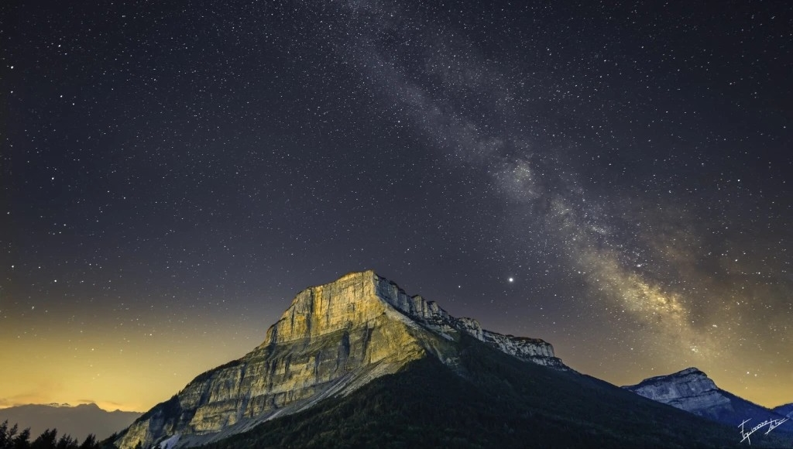

Voie lactée sur le Mont Granier (Savoie)
Crédit : Alex Meneghin – Club d’astronomie CRABE
Ayant passé mon enfance dans les hautes vallées savoyardes, j’ai eu la chance, très tôt, d’admirer certaines des plus belles nuits étoilées que l’on puisse voir en France métropolitaine.
Et c’est certainement de cet émerveillement que me vient cette envie de partager mon enthousiasme pour le monde qui nous entoure, de l’infiniment grand à l’infiniment petit.
Cette envie ne m’a jamais quitté depuis.